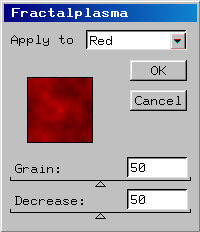
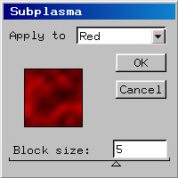
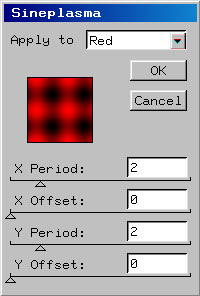
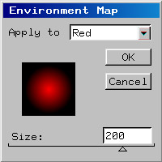
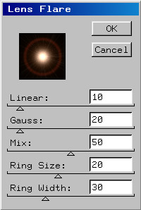

Impact Texture Studio Online Manual
Generation Menu
File menu
Edit menu
Adjust menu
Generation menu
Distortion menu
Blur menu
Mix menu
Color menu
Misc menu
Generates a fractalcloud

Apply to: Channel of the current
layer to apply the fractalplasma to
Grain: Allows you to make smoother
or more grainy clouds
Decrease: Block smoothing size
Subplasma
Generates a subdivision-based plasma

Apply to: Channel of the current
layer to apply the subplasma to
Block size: Size/smoothness of the
subplasma
Sineplasma
Generates a sine-based plasma

Apply to: Channel of the current
layer to apply the sineplasma to
X Period: Number of periods fitting
in the x-resolution
X Offset: Offset of the plasma in
the x-resolution
Y Period: Number of periods fitting
in the y-resolution
Y Offset: Offset of the plasma in
the y-resolution
Environment map
Generates an environment map

Apply to: Channel of the current
layer to apply the environment map to
Size: Size of the environment map
Lens flare
Generates a lens flare

Linear: Linear intensity (white)
Gauss: Gaussian intensity (orange)
Mix: Mix factor between linear and
gaussian
Ring size: Size of the ring
Ring width: Thickness of the ring